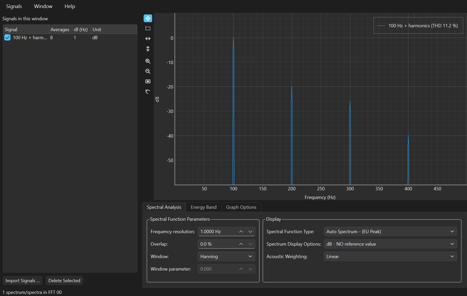

Measurement signal processing — spectra, transfer functions, spectrograms and adaptive filtering — free, and on any machine.
Signal processing software has traditionally been expensive, and tied to the instrument or the licence that came with it. Someone with a recorded vibration, a microphone file, or a hammer test has a straightforward question to ask of it — and has usually had to buy a seat, or borrow one, before asking. pySPWB removes that step entirely: it is free, open source, and it runs on the machine you already have.
It is the successor to the LabVIEW Signal Processing Work Bench, which Charette AI Group open sourced when it reached end of life. Rather than retire the software, it was rebuilt in Python so it could keep growing without LabVIEW — and it now runs on Windows, macOS and Linux, where the original ran on Windows alone.
Five analysis windows that share their signals: send the same measurement to an FFT, a transfer function and a spectrogram at once, and they stay in step as you change what is selected.
The application and the library are the same code, and you can take whichever half suits you.
A signal processing tool is only worth having if you can quote what it prints. pySPWB's results are pinned to reference data generated by driving LabVIEW 2022 itself, and that comparison runs automatically on every change — so a spectrum, transfer function or spectrogram you obtained with the original LabVIEW software still comes out the same here.
Its native file format is plain HDF5, an open standard that MATLAB, Julia, R and HDFView read without pySPWB installed, so measurements never become hostage to the tool that recorded them. Every downloadable build is checked on its own platform before release: it has to open all five analysis windows, write and re-read an HDF5 file, and return the right numbers for a spectrum and a transfer function, or it is not published.
Free standalone application — one folder, no installation and no Python required.
Download for Windows Download for macOS Source on GitHubBoth buttons bring you to the GitHub release page: scroll down to the Assets section and click SPWB-windows-x64.zip for Windows, or SPWB-macos-apple-silicon.zip / SPWB-macos-intel.zip for macOS. Unzip the whole folder and keep it together — the program needs the files beside it.
On Linux, or to use it as a library in a notebook, install it from PyPI instead: pip install spwb[gui] for the application, or pip install spwb for the library alone.
Windows may show a SmartScreen notice on first run because the download is unsigned; choose “More info”, then “Run anyway”. On macOS, right-click the app and choose “Open” the first time. Every release also carries a SPWB-checksums.txt so you can verify exactly what you downloaded.

Visit the pySPWB SiteScreenshots of all five analysis windows, and the user manuals.
The Library on PyPIFor notebooks and scripts: pip install spwb
Open sourced when it reached end of life.
pySPWB is free and open source. There is no licence to buy, no seat to renew, no account to make, and nothing about you is collected or sent anywhere. For measurement software that is unusual — and it is also why software like this is hard to sustain: there is no subscription to bill and no data to sell, so nothing pays for the work behind it.
Signal processing software takes real time to build and, more importantly, to keep alive. Operating systems change, Python and its scientific stack move underneath it, new file formats appear, and features get added because a user asked. A donation, however small, is what makes that continued attention possible — and it directly funds the next free tool as well as the upkeep of this one.
If pySPWB saved you a licence fee, an afternoon, or a measurement you would otherwise have had to repeat, please consider chipping in. It genuinely makes the difference between a project that keeps improving and one that quietly stops.
DonateSecure payment through PayPal — no account required, and any amount is appreciated. Thank you for supporting independent, open source software.